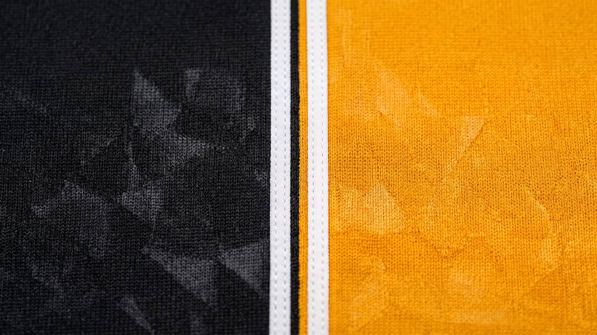

How we
got here
2005
How it started
Falcons RFC was founded in 2005 by Robert Portelli, together with two of the players’ parents, Joseph Borg and John D. Grimo. The club started as a tag rugby team for children aged ten to twelve, and the coaches began with the basics: the rules of the game, passing, running straight and forward, and side-stepping.
Contact rugby followed soon after. Players learned how to tackle and be tackled safely, how to ruck and maul, and how to work a lineout and a scrum. As word got around, more children joined the club. Older players moved up an age group as they grew, and younger ones took their place, which is how the club has kept going ever since.
2009
First youth titles
Falcons formed their first Under-15/16s team in 2009, coached by Robert Portelli with help from Joe Borg. That same year, the Under-13s and Under-15s went unbeaten to win their leagues.
2010
New teams, new trophies
A year later, the club opened its first Under-17s team, made up mostly of players aged fourteen to sixteen with a handful of seventeen-year-olds. Kavallieri were a tough side to beat, but Falcons won the Under-17s league in the same year the team was formed.
On 14 March 2010, the club toured Sicily to play Amatori Catania. Both the Under-14s and the Under-16s lost, 57-7.
That September, Falcons fielded their first Senior team, built largely from the older Under-17s players. The league was a hard step up for the young side, but after some tough training they reached the final of the 10s league, finishing second to Stompers. By the end of the year, the Under-13s, Under-15s and Under-17s had all won their leagues without losing a match.
2011
New coach, more silverware
In January 2011, South African coach Johan Van Der Linden joined the club. Five months later, the Under-17s and the Senior team won the Puttinu Cares Cup against B’Kara Alligators, and the Falcons Ladies won the Malta International Airport 10s League.
That takes us to 2011. Falcons have kept playing, growing and picking up silverware in the years since, and we are filling in that part of the story here soon.
Thank you to every coach, parent and volunteer who has been part of this club since 2005.
Through
the years
A few photos from the flock along the way. Drag, swipe or use the arrows.
More than
a team
